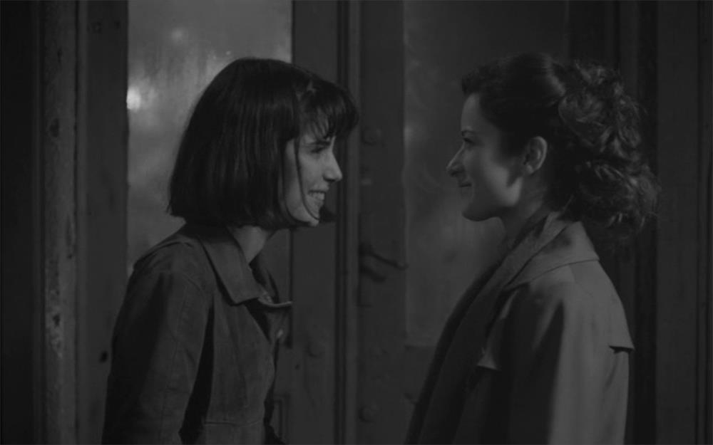
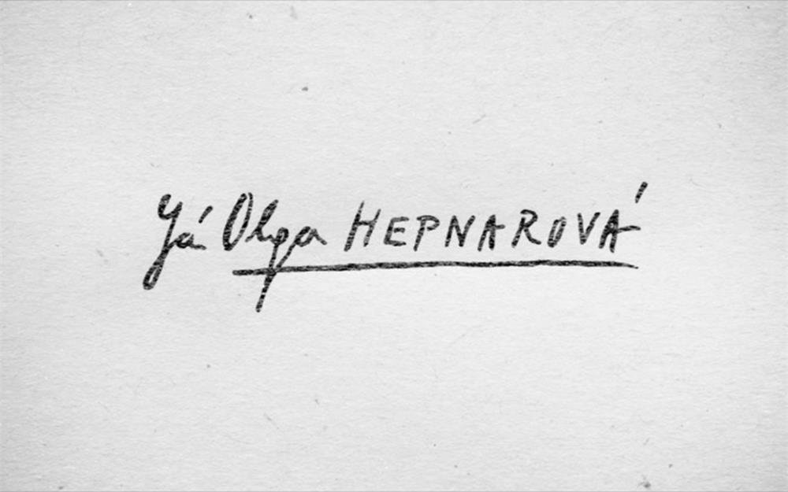

You think you saw me here, which is wrong. Just my body here.

Klára Melísková是一名捷克演员，其丈夫Lukáš Hlavica同为演员，年轻时一直默默无闻，通过出演话剧《Agnieszka》崭露头角
Marika Soposká是波兰著名童星，她出演的话剧《Bába (1998)》在捷克可谓家喻户晓，但之后事业一直未有较大突破。
本片根据真实事件改编，1973年，七月十日的布拉格，一辆洒水车冲上人行道，造成八人死亡。一位女性从车上下来，面不改色的对警察说她是故意的，她就是欧嘉。 这则事件成了捷克家喻户晓的大新闻，人们都在议论欧嘉为什么要这么做。多年以后，人们才从欧嘉的日记里发现了一些蛛丝马迹。原来这跟欧嘉悲惨的童年有关。

这部电影由两名初出茅庐的两兄弟联袂导演，故事背景发生在布拉格之春发生后的几年。当时的捷克依然处于计划经济中，官僚体系极度迂腐。女主不止一次想政府求援， 却都被不在管辖范围拒绝，黑白的画面带我们回到黑白的年代。